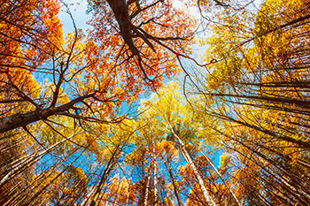
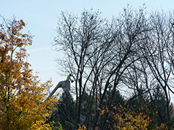

As autumn sweeps through South Jersey, few sights are as breathtaking as the trees bursting into shades of reds, yellows, and oranges. For anyone who appreciate nature, this annual transformation is a reminder of how intricate and fascinating nature truly is. While many people enjoy the display, few stop to consider what actually causes leaves to change color. Understanding this process not only deepens your appreciation for the season but also highlights the importance of professional care from tree companies Galloway residents trust. Healthy trees produce more vibrant colors, and proper maintenance ensures they remain strong enough to endure the changing seasons. We’re going to uncover the science behind fall foliage and share why caring for your trees year-round is essential to keeping your property beautiful and balanced.

The Science of Color-Changing Leaves
The secret to fall’s color palette lies within the leaves themselves. During spring and summer, trees produce chlorophyll. This is the green pigment responsible for capturing sunlight and driving photosynthesis which is the process that allows trees to convert sunlight into energy. As the days shorten and temperatures drop, chlorophyll production slows down. Eventually, the green pigment fades away, revealing other pigments that were always present but hidden.
Carotenoids bring out shades of yellow and orange, while anthocyanins create red and purple hues. The combination of these pigments, along with variations in temperature and sunlight, results in the vivid spectrum we associate with autumn. A warm, sunny fall with cool nights often produces the most brilliant colors because these conditions enhance anthocyanin formation. Trees that are stressed, diseased, or lacking nutrients, however, may show dull or premature color changes—another reason why professional tree care is so important.
Environmental Factors That Affect Fall Color
Not all trees change color at the same time or in the same way. Species like maples, sweetgums, and oaks each have their own color signatures and timing. Environmental conditions such as rainfall, temperature swings, and even soil quality all influence how leaves transition. Drought, for example, can cause leaves to drop early, cutting the color show short. Meanwhile, too much rain can dull pigments and shorten the viewing season.
In Galloway and the surrounding areas, where native hardwoods mix with decorative ornamentals, these variations are especially noticeable. Homeowners who invest in regular pruning, fertilization, and pest management from tree companies Galloway locals rely on often see stronger, healthier trees that produce more consistent color each year. The same maintenance that supports lush green foliage in summer also contributes to richer hues in fall.

Tree Companies Galloway Tips for Healthier Fall Foliage
To get the best color display each year, tree health is key. Here are a few practices professionals recommend:
- Schedule seasonal pruning. Proper pruning removes deadwood and improves air circulation, promoting balanced growth.
- Fertilize in the fall. Providing essential nutrients helps trees recover from summer stress and prepare for winter dormancy.
- Mulch and water properly. A properly applied layer of mulch retains soil moisture and protects roots as temperatures drop.
- Monitor for pests and disease. Insects or fungal infections can affect pigment development and cause premature leaf drop.
If your trees show uneven coloring or early leaf loss, it may signal an underlying issue that requires expert attention.
A Season to Appreciate and Care for Your Trees
The magic of autumn is fleeting, but the care you give your trees lasts far beyond the season. Healthy trees are not just beautiful. They add value to your property, provide shade, and contribute to the overall balance of the local environment. Working with experienced tree companies Galloway residents recommend—like Ben Bivins Tree Experts—ensures that your trees remain vibrant through every season. Whether it’s pruning, fertilization, or full maintenance programs, their team has the knowledge to preserve your landscape’s natural beauty.
As you admire the colorful canopy this fall, take a moment to appreciate the science and care that make it possible. To learn more about maintaining your trees or to schedule professional service, visit our Galloway tree service page for more information.